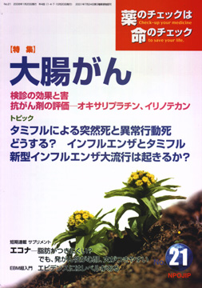

No.21 特集 大腸がん 2006年1月 発行
 大腸がん（結腸・直腸がん）はもともと欧米に多いがんでした。日本でも増える傾向があったため、10数年前までは、そのうち欧米を追い越す勢いと言っていました。ところが、意外に早く追い越してしまったのです。すでに英米を追い越し、あとはドイツが残っているくらいです。2002年の死亡数は約3.8万人（男性2.1万人、女性1.8万人）、10万人あたりの死亡率で男性は33.6人、女性も26.7人です。肺がん5.6万人、胃がん4.9万人についで3番目の多さです。ただ、1995年ころからは、全体的に減少しはじめ、若い人ではもっと以前から減少傾向もあります。
検診も治療も、なかなか成果があがり難い「がん」が多いのですが、そのような中にあって、大腸がんは、成果があがっている数少ないがんのひとつと言えるようです。
大腸がんとはどのようなものか。考えてみましょう。
※ この特集は、2004年11月に大阪で開催した第4回医薬ビジランスセミナーでの講演をもとに、最新情報を取り入れ、大幅に加筆改訂したものです。
もくじ
特集
■大腸がんの予防と治療
■大腸がんに用いられる抗がん剤の評価
■薬の説明書（NPOJIPの判定付き）
・オキサリプラチン
・イリノテカン
短期集中連載
■サプリメント：エコナ
脂肪がつきにくい？ でも、発がん性が心配、火がつきやすい
提言
■NPOJIPの提言
本当に怖いのは薬だ！
連載
■リレーエッセイ 私のおしごと―医療ソーシャルワーカー
■みんなのやさしい生命倫理 ２１
インフォームド･コンセント（８） まとめ
■映画のなかのクスリ（14） 食事療法
■EBM超入門（10）
エビデンスにはレベルがある
■ぷちいのちジャーナル
ニート支援のための連携を
■行ってきました その１
ワクチントーク２００５in 京都
■行ってきました その２
医療事故調査会第10周年記念シンポジウム
■行ってきました 番外編
ヨーロッパ糖尿病学会（アテネ）
アクトスは糖尿病の余後を改善せず、心不全が増え、膀胱がんも
■コーヒー無礼区
駆け込み寺か寮母さんかシルバーボランティアで海外へ
トピック
■１ タミフルによる突然死と異常行動死
■２ どうする？ インフルエンザとタミフル
■３ 新型インフルエンザ大流行の起こり方
■読者からの手紙
試行錯誤のすえ、ようやく安定剤を止めることができました
■読者の声
・「理想と現実とのギャップ」
・「C型肝炎を特定疾患に指定してほしい」
・「アスベストは身近にある？」 など
■書評
・『アキラの地雷博物館とこどもたち』
・『薬害肝炎 誰がC型肝炎を「国民病」にしたか』
・『誰も書かなかった厚生省』
■NPOJIP関連書籍紹介/TIP出版物
■NPOJIP書籍申込み用紙
■NPOJIP関連の講演のお知らせ
■編集後記
短期連載より
サプリメント（健康補助食品）２
エコナ―脂肪がつきにくい？ でも、発がん性が心配、火がつきやすい
寺岡章雄（薬剤師、医薬情報センターあさひ）
ヒット商品にみるサプリメントの実像
前回は、サプリメントとはどのようなものか、どういった問題があるのかを全体的に見ました。今回は具体的な例として、トクホ（特定保健用食品）でベストセラー商品となっているエコナをとりあげます。
「体に脂肪がつきにくい」の宣伝でベストセラーに
エコナは、「体に脂肪がつきにくい」の宣伝で販売されている食用油で、主成分はジアシルグリセロール（DAG）です。ほとんどの食用油成分はトリアシルグリセロールという3つの脂肪酸がグリセロールと結合した形なのですが、エコナのジアシルグリセロールはこれら3つの脂肪酸のうち1つを欠いた形をしています（図参照）。このジアシルグリセロールは、他の食用油の中にも数%程度は含まれているのですが、エコナはこれを80%以上含むよう人工的に調整した食用油です。メーカーの花王は、ジアシルグリセロールは体の中で燃えやすいので体に脂肪がつきにくいと主張しています。
（以下、引用省略）
詳しくは本誌で。